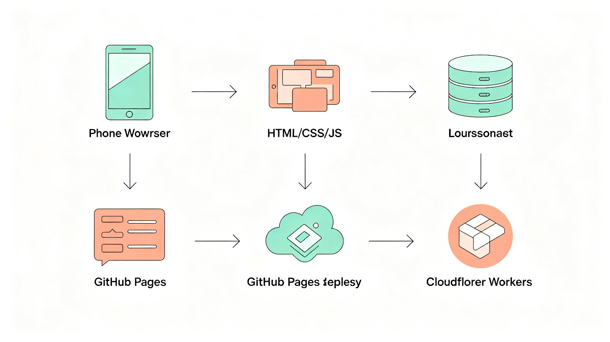

TRAE 开发纪实
生活习惯小助手 V2 -- 从0到1的 AI 驱动开发全记录
1. 项目背景：为什么做这个应用？
我关注中医养生很久了，《黄帝内经》里讲的"子午流注"——不同时辰对应不同经络的养生理念，一直觉得很有道理，但从来没有真正落地执行过。市面上的打卡App（小打卡、Habitica）功能很强，但没有一个把中医养生知识深度整合进去的。
我的真实需求是：
- 不想下载App——手机空间有限，不想为了打卡再装一个几十MB的应用
- 要离线可用——通勤地铁上信号差，不能依赖网络
- 数据要隐私——健康数据不想上传到任何云端服务器
- 要有中医养生指导——不只是记录，还要告诉我"什么时候该做什么"
2. 项目数据总览
技术架构

| 层级 | 技术 | 文件 |
|---|---|---|
| HTML入口 | index.html + CSS | 636行 |
| 应用核心 | app.js + main.js | 初始化、生命周期 |
| 数据层 | constants / habits / content / packs | 3,800+行数据 |
| 核心工具 | storage.js + utils.js | localStorage + 通用函数 |
| 功能模块 | checkin / habit / stats / water / ai / constitution 等 | 9个独立模块 |
| UI渲染 | render.js + panels.js + events.js | 动态DOM生成 |
| 兼容层 | compat.js | App命名空间→全局暴露 |
3. 开发全过程：从需求到上线
3.1 第一阶段：初始版本生成（Session 1）
第一轮对话中，我给 TRAE Work 一个Prompt，直接生成了完整的应用框架：
TRAE 在一个Session中就生成了完整的单文件应用，包含所有HTML结构、CSS样式和JavaScript逻辑。第一次打开就能跑，虽然功能还不完善，但框架和核心逻辑已经到位了。
3.2 第二阶段：功能迭代与模块化（Session 2-5）
每天一个Session，逐步添加功能。每次我对TRAE说"添加XXX功能"，它会：
- 先分析现有代码结构，找到插入点
- 生成新功能的完整代码（HTML + CSS + JS）
- 确保与现有功能的数据流对接
- 自动测试，发现兼容性问题并修复
3.3 第三阶段：Bug修复与兼容性攻坚（Session 6-8）
应用在电脑浏览器正常，但在手机上完全白屏。这是整个开发过程中最棘手的bug。
现象：手机打开页面完全空白，只有底部导航栏
排查过程：
- 用内置浏览器测试，console报错
SyntaxError: missing ) after argument list - 用acorn解析器定位：ES2015模式下638行报错
- 根因：代码中使用了51处 optional chaining (
?.)，这是ES2020语法，部分手机WebView不支持 - 同时发现90处中文破折号（U+2014 U+2014）导致V8解析器异常
修复：将所有 ?. 替换为 && 安全访问链，中文破折号替换为 --
用TRAE启动子Agent做全面静态检测（DOM引用完整性、函数调用完整性、数据流完整性、存储完整性），发现一个致命BUG：
saveData() 函数在3处被调用（体质测试添加习惯、数据导入），但从未被定义。导致：
- 用户从体质测试添加推荐习惯后，刷新页面数据丢失
- 数据导入功能直接报错 ReferenceError
修复：添加 function saveData() { saveConfig(); saveRecords(); }
JS中引用了 #ambientBg 和 #checkinPanelBody，但HTML中没有对应的元素。
影响：时辰氛围背景色功能永远不生效；饮水打卡面板内容无法显示。
修复：在HTML中添加对应的DOM元素。
3.4 第四阶段：体质测试完整实现（Session 9）
原始体质测试只有8道简化题。我要求TRAE替换为王琦教授《中医体质分类与判定》标准量表的完整67道题目。
TRAE的执行过程：
- WebSearch：搜索"王琦九种体质辨识问卷 66题"，找到MedSci的完整量表页面
- WebFetch：抓取完整题目内容（67题含选项）
- 代码生成：将67题转为JS数据结构，每题5个选项（1-5分）
- 判定逻辑重写：实现标准的转化分公式：转化分 = (原始分 - 题数) / (题数 x 4) x 100
- 性别筛选：湿热质Q37限女性、Q38限男性，测试前选择性别
- 多体质结果：支持同时展示多种偏颇体质倾向
4. 踩坑全景总结
| # | 问题 | 现象 | 根因 | 修复 | TRAE如何发现 |
|---|---|---|---|---|---|
| 1 | V8兼容性 | 手机白屏 | 51处ES2020语法 ?. | 替换为&&链 | acorn解析器+浏览器console |
| 2 | 中文破折号 | 手机白屏 | 90处U+2014导致V8报错 | 替换为-- | Grep统计+二分法 |
| 3 | saveData缺失 | 数据导入失败 | 函数被调用但从未定义 | 添加函数定义 | 子Agent全面静态检测 |
| 4 | DOM元素缺失 | 功能不生效 | HTML缺少2个id | 添加DOM元素 | getElementById交叉检查 |
| 5 | 死代码残留 | 引用不存在的DOM | editMode无调用入口 | 删除死代码 | 函数调用完整性检测 |
| 6 | CATEGORY_MAP缺失 | 负向习惯无分类 | negative无映射 | 补全映射 | 数据流完整性检测 |
| 7 | Git冲突 | push被拒 | 多Session并行修改 | rebase解决冲突 | git pull --rebase |
| 8 | 浏览器超时 | 无法测试 | 服务器进程僵死 | 重启服务器 | 重开端口 |
5. 用了 TRAE 哪些能力？
| TRAE 能力 | 使用场景 | 使用频次 | 效果评价 |
|---|---|---|---|
| Code 模式（代码生成） | 从需求描述生成完整应用、添加功能模块、修复Bug | 核心能力，每个Session都用 | 生成代码质量高，结构清晰 |
| WebSearch | 搜索王琦体质辨识标准量表、竞品分析、部署文档 | 3次 | 精准找到权威来源 |
| WebFetch | 抓取MedSci完整67题量表内容 | 2次 | 完整提取结构化数据 |
| 子Agent（Subagent） | DOM引用完整性检测、函数调用检测、数据流分析 | 3次 | 发现人工难以发现的隐式Bug |
| Grep/Read/Search | 代码审查、定位Bug、确认修改 | 50+次 | 快速定位问题 |
| 浏览器测试 | 内置浏览器打开页面验证功能 | 5次 | 实时反馈渲染效果 |
| Git 操作 | 版本管理、冲突解决、推送到GitHub | 20+次 | 全流程版本控制 |
| HTML-Report Skill | 生成方案文档、开发纪实报告 | 2次 | 专业级文档排版 |
| RunCommand | Python脚本批量替换代码、启动HTTP服务器 | 10+次 | 高效批量处理 |
| GenerateImage | 生成报告封面插图 | 2次 | 与文档风格一致的插图 |
6. Session 记录（真实性核验）
以下是参与本项目开发的关键Session ID，可在TRAE中搜索验证：
完整的Git提交记录可在 GitHub 仓库查看：
https://github.com/rui66648/lifestyle-assistant
7. 关键 Prompt 合集
7.1 应用生成
7.2 代码检测
7.3 Bug修复
7.4 体质测试
7.5 开发纪实
8. 反思与总结
8.1 做对了什么
- 一句话需求起步——给出足够具体的需求描述，让TRAE一次性生成可运行的框架，避免反复修改基础结构
- 每个功能一个Session——保持每个对话的主题聚焦，避免上下文混乱
- 重视兼容性——手机白屏问题倒逼了全面的ES6+语法审查，最终让应用能在更广泛的设备上运行
- 用TRAE检测TRAE——让TRAE的子Agent去检查TRAE自己生成的代码，形成了"生成→检测→修复"的闭环
8.2 做错了什么
- 过早修改名言系统——在不稳定的代码基础上继续叠加功能，导致版本混乱，最后不得不回退
- 多Session并行修改同一文件——导致多次Git冲突，浪费了时间在rebase上
- 没有尽早用真机测试——如果在开发早期就在手机上测试，兼容性问题会更早暴露
8.3 TRAE的局限
- 长对话（超过一定轮次）后，上下文理解会衰减，可能出现"忘记之前的约束"的情况
- 内置浏览器偶尔超时，无法可靠地替代真机测试
- 代码拆分到多文件后，跨文件引用检查还不够完善